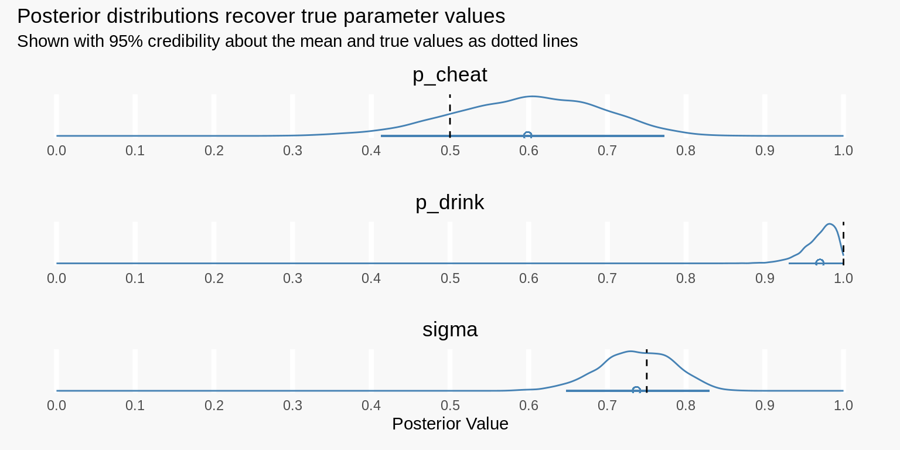
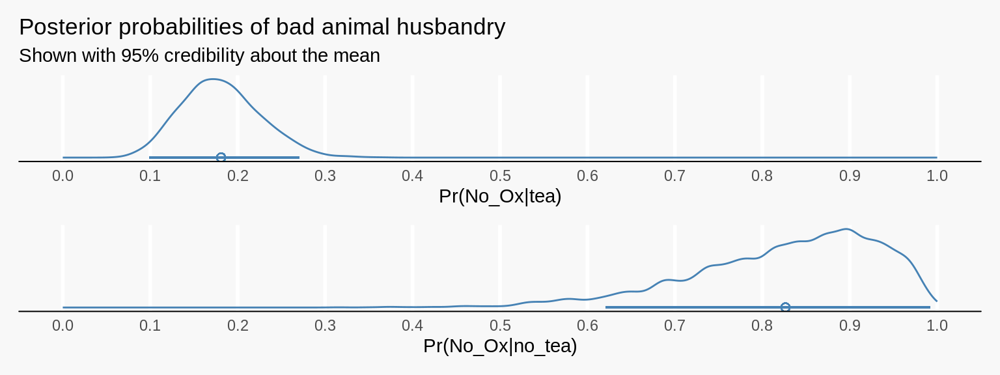

This is a retelling of Richard McElreath’s story about tea, oxen, and discrete parameters in Stan. In a Chinese village, children love tea but can only enjoy it after stabling their oxen. The problem is, children are liars sometimes and its up to us enforce the rules!
You are the village enforcer of oxen customs… Each evening, you must determine which children have properly stabled their oxen. For many houses, you can see whether or not the ox is stabled. But other houses have enclosed stables, so you cannot observe the ox without appearing to accuse that child of violating the rule. To do so and then discover a properly stabled ox would be embarrassing for everyone…
So, there is a cost to revealing whether or not a child has stabled their oxen. We also want to know whether tea-drinkers or non-tea-drinkers are a better bet to blame. We need a model to help us reason about all this.
Preliminaries
This post is targeted at folks who already have an understanding of bayesian statistics. Throughout, I’ll use Stan as my primary modeling tool. There is a lot you can do to make your Stan code more efficient but this post shoots for interpretability. To learn more about Bayesian Statistics and Stan, I highly recommend Richard’s book Statistical Rethinking and the wonderful documentation on the Stan website.
# Interface with Stan
library(rstan)
# Tools for working with posteriors
library(tidybayes)
# Stan options
options(mc.cores = parallel::detectCores())
rstan_options(auto_write = TRUE)I use R and the tidyverse to wrangle data and dispatch analyses to Stan. You can learn more about the tidyverse through Hadley Wikham’s free online book R4DS. By the way, Stan is an external library that works just fine with Python too… Feel free to use whatever you’re most comfortable with.
# Tidyverse for wrangling and plotting
library(tidyverse)
library(patchwork)
# Set up plot theme
theme_minimal() %+replace%
theme(panel.grid.major = element_blank(),
panel.grid.minor = element_blank(),
plot.background = element_rect(color = "transparent", fill = "grey90")) %>%
theme_set()With that out of the way, lets return to the problem at hand.
Building a model for oxen and tea
To create our model, lets think carefully about about this Chinese village and build a mini mathematical replica of it. As the enforcer, we walk around the village and observe children drinking tea or not drinking tea. We also observe each child’s stall… but only some of them are uncovered. Should we run the risk of checking on some covered stables?
Lets start by calling out some notation. We define three parameters below. Learning the values of these parameters will help us in our decision making process.
- Let \(p_{drink} = Pr(Tea | Ox)\). This is the probability of a child drinking tea given they have stabled their ox. Zero is a plausible value for this probability as not every child may want to drink tea.
- Let \(p_{cheat} = Pr(Tea | No\_Ox)\) be the probability of a child drinking tea given they have not stabled their ox.
- Let \(s_i\) indicate whether or not a child has stabled their ox.
With these building blocks, we can build our little math world. \(s_i\) and \(Tea_i\) are given data for each child \(i\). Recall that some stables are covered and thus in unobserved states. \[ \begin{align} &Tea_i \sim Bernoulli(\pi_i) & \text{[Child i drinks tea with probability } \pi_i] \\ &\pi_i = s_ip_{drink} + (1 - s_i)p_{cheat} & [\pi_i \text{ is influenced by stabling ]}\\ &s_i \sim Bernoulli(\sigma) & [\sigma \text{ is the proportion of children who stable]}\\ &p_{drink} \sim Beta(2, 2) & \text{[Mildly regularizing priors]}\\ &p_{cheat} \sim Beta(2, 2) \\ &\sigma \sim Beta(2, 2) \end{align} \]
Complexity arises from the fact that we don’t observe all stables, \(s_i\). We deal with this in line 3. We lets the “stabling proportion” be a parameter in our model and let Stan average over our ignorance. This means \(\sigma\) will just represent the proportion of children who stable. Its good practice to not throw out the observations where we can’t see inside the stable. This method of Bayesian imputation fills lets us propagate our uncertainty forward to our parameter estimates. Finally, We chose mildly regularizing priors in the last 3 lines for the probability of cheating, drinking, and proportion of children who stable.
tdf <- tibble(x = rbeta(1e4, 2, 2))
interval <- HDInterval::hdi(tdf$x)
tdf %>%
ggplot(aes(x)) +
stat_density(geom = "line", size = 1, color = "steelblue") +
geom_segment(aes(y = 0, yend = 0,
x = interval[1], xend = interval[2]),
color = "steelblue") +
geom_point(aes(y = 0, x = mean(tdf$x)),
shape = 1, size = 3, color = "steelblue") +
scale_y_continuous(NULL, NULL) +
scale_x_continuous(breaks = seq(from = 0, to = 1, by = .1)) +
theme(#axis.line.x.bottom = element_line(),
panel.grid.major.x = element_line(color = "white", size = 1)) +
labs(x = "Probability",
title = "Mildly regularizing prior",
subtitle = "Shown with 95% credibility about the mean",
caption = "Beta(2, 2)\nUsed for Pr(cheat), Pr(drink), and Pr(stable)\n")
So how will we use this model once we’ve found it’s parameters? We’ll calculate new parameters that measure exactly what we need to help with our enforcing decisions. First of all, we can calculate the probability of drinking tea for any child. Below, we use the law of iterated expectations to break out the probability into known chunks. Thats just a fancy way to say you can calculate the probability of an event by looking at every “sub” event contained within it. When we see children drinking tea, they’ve either stabled their ox or they have not.
\[ \begin{align} Pr(Tea) &= Pr(Tea|Ox)Pr(Ox) + Pr(Tea | No\_Ox)Pr(No\_Ox) \\ &= \sigma p_{drink} + (1 - \sigma)p_{cheat} \end{align} \]
Leveraging Bayes formula, we can use this to figure out the probability a child is lying. This tells us the probability of a tea drinking child having not stabled their ox. As enforcers, this will be important to our decision making process.
\[ \begin{align} Pr(No\_ox | tea) &= \frac{Pr(Tea | No\_Ox)Pr(No\_Ox)}{Pr(Tea)} \\ &= \frac{(1 - \sigma) p_{cheat}}{\sigma p_{drink} + (1 - \sigma) p_{cheat}} \end{align} \]
And finally, we can calculate the probability of a child not stabling given they are not drinking tea. \[ \begin{align} Pr(No\_ox | No\_tea) &= \frac{Pr(No\_Tea | No\_Ox)Pr(No\_Ox)}{Pr(No\_tea)} \\ &= \frac{(1 - \sigma) (1-p_{cheat})}{\sigma (1-p_{drink}) + (1 - \sigma) (1-p_{cheat})} \end{align} \]
The last two probability statements will be essential to our jobs. They quantify the likelihood of a child not stabling their ox when we observe tea drinking and when we don’t observe tea drinking. If we have an understanding of the “cost” of our own embarrasment, we can bake these in to a utility function that would help us understand whether or not we should pull that childs card.
Okay, now that we’ve figured out the math, lets take it to the data!
Application
In this section, we’ll simulate data with made up parameters then use Stan to recover them. This is something you should get use to as a Baysian practitioner. It represents the bigger picture of Bayesian data analysis. We specify the data generating process by simulating the data we are expecting to see. We then encode that simulation code in Stan but leave our unknowns as parameters. Finally, we feed Stan real data and let it search around for the paramers that best describe it.
Simulation
First we’ll simulate the data. Note how our model, \(pi_i = s_ip_{drink} + (1 - s_i)p_{cheat}\), is represented directy in this code block.
# The seed makes our analysis repeatable
set.seed(1)
# There are 100 children in the village
N_children <- 100
# 44 stables wre unobservable
idx_covered_stables <- sample(1:N_children, size = 22)
# These parameters are unknown in the real data
## 75 Percent of children stable their ox
p_stabled <- .75
## After stabling ox, 100% of children drink tea
p_drink <- 1
## Unstabling children cheat 50% of the time
p_cheat <- .5
# Simulate!
set.seed(1)
stabled <- rbinom(N_children, size=1, prob=p_stabled)
stabled_obs <- stabled
stabled_obs[idx_covered_stables] <- -1
tea <- rbinom(N_children, size=1, prob=stabled*p_drink + (1-stabled)*p_cheat)
df <- tibble(stabled, stabled_obs, tea)
head(df)## # A tibble: 6 x 3
## stabled stabled_obs tea
## <int> <dbl> <int>
## 1 1 -1 1
## 2 1 1 1
## 3 1 1 1
## 4 0 0 1
## 5 1 1 1
## 6 0 0 0Stan
Now we encode our model in stan. The likelihood portion of our stan model is really the same as the simulation code above. log_mix might be a bit confusing, but its just doing the same thing as the mixture in our simulation above \(pi_i = s_ip_{drink} + (1 - s_i)p_{cheat}\).
data {
// Number of children in city
int n;
// Stable status (-1 is unobserved)
int stabled_obs[n];
// Observed tea drinking
int tea[n];
}
parameters{
real<lower=0,upper=1> p_cheat;
real<lower=0,upper=1> p_drink;
real<lower=0> sigma;
}
model{
// priors
p_cheat ~ beta(2,2);
p_drink ~ beta(2,2);
sigma ~ beta(2,2);
// probability of tea
for (i in 1:n) {
if (stabled_obs[i] == -1) {
// ox unobserved
target += log_mix(
sigma ,
bernoulli_lpmf(tea[i] | p_drink) ,
bernoulli_lpmf(tea[i] | p_cheat));
} else {
// ox observed
tea[i] ~ bernoulli(stabled_obs[i]*p_drink + (1-stabled_obs[i])*p_cheat);
stabled_obs[i] ~ bernoulli(sigma);
}
}
}Now, lets take our model and condition it on our simulated data to see if we recovered our parameters. Our 95% credible intervals contain the recovered parameter values.
stan_fit <- sampling(stan_model, compose_data(df),
chains = 4, cores = 4, refresh = 0,
control = list(adapt_delta = .99))
print(stan_fit, probs = c(.05, .95))## Inference for Stan model: 22811e608fb0a2aa37c70866058b8526.
## 4 chains, each with iter=2000; warmup=1000; thin=1;
## post-warmup draws per chain=1000, total post-warmup draws=4000.
##
## mean se_mean sd 5% 95% n_eff Rhat
## p_cheat 0.45 0.00 0.09 0.29 0.61 2241 1
## p_drink 0.97 0.00 0.02 0.92 0.99 3200 1
## sigma 0.73 0.00 0.05 0.65 0.80 2388 1
## lp__ -83.71 0.04 1.26 -86.18 -82.36 1160 1
##
## Samples were drawn using NUTS(diag_e) at Sat Feb 8 20:39:17 2020.
## For each parameter, n_eff is a crude measure of effective sample size,
## and Rhat is the potential scale reduction factor on split chains (at
## convergence, Rhat=1).An awesome benefit of Bayesian data analysis is that we get to work with a posterior afterwards. In the next section, we’ll take advantage of this by using this rich understanding of our parameters in to our decision making process.
df_posterior <- gather_draws(stan_fit, p_cheat, p_drink, sigma)
p1 <- df_posterior %>%
ggplot(aes(.value)) +
stat_density(geom = "line", color = "steelblue") +
scale_y_continuous(NULL, NULL) +
scale_x_continuous(breaks = seq(from = 0, to = 1, by = .1)) +
facet_wrap(~ .variable, ncol = 1, scales = "free_y") +
labs(x = "Posterior Value",
title = "Parameter fit")
p2 <- df_posterior %>%
mutate(chain = as.factor(.chain)) %>%
ggplot(aes(y = .value, x = .iteration, color = chain)) +
geom_line(alpha = .7) +
facet_wrap(~ .variable, ncol = 1, scales = "free_y") +
scale_color_viridis_d() +
theme(axis.ticks.y = element_line()) +
labs(y = "", x = "Iteration",
title = "Parameter Exploration")
p1 + p2
Emperics
df_posterior <- spread_draws(stan_fit, p_cheat, p_drink, sigma)
df_posterior <- df_posterior %>%
mutate("Pr(No_Ox|tea)" =
((1 - sigma)*p_cheat) /
(sigma*p_drink + (1-sigma)*p_cheat))
p1 <- df_posterior %>%
ggplot(aes(`Pr(No_Ox|tea)`)) +
stat_density(geom = "line", color = "steelblue") +
scale_x_continuous(breaks = seq(from = 0, to = 1, by = .1),
limits = c(0, 1)) +
scale_y_continuous(NULL, NULL) +
theme(axis.line.x.bottom = element_line()) +
ggtitle("Posterior probabilities of bad animal husbandry")
df_posterior <- df_posterior %>%
mutate("Pr(No_Ox|no_tea)" =
((1 - sigma)*(1-p_cheat)) /
(sigma*(1-p_drink) + (1-sigma)*(1-p_cheat)))
p2 <- df_posterior %>%
ggplot(aes(`Pr(No_Ox|no_tea)`)) +
stat_density(geom = "line", color = "steelblue") +
scale_x_continuous(breaks = seq(from = 0, to = 1, by = .1),
limits = c(0, 1)) +
scale_y_continuous(NULL, NULL) +
theme(axis.line.x.bottom = element_line())
p1 / p2
Conclusion
Alright, we’ve gone through a journey from a small Chinese village all the way to mixture models. So should we check in on the children’s stables when they aren’t drinking tea? Our next step would be to definie a utility function that describes how much we value embarrassment vs. catching rule breakers. We can ultimately match those up with our posterior distributions and utilize Bayesian decision theory to do whats best. This is a topic we’ll work on in another post.